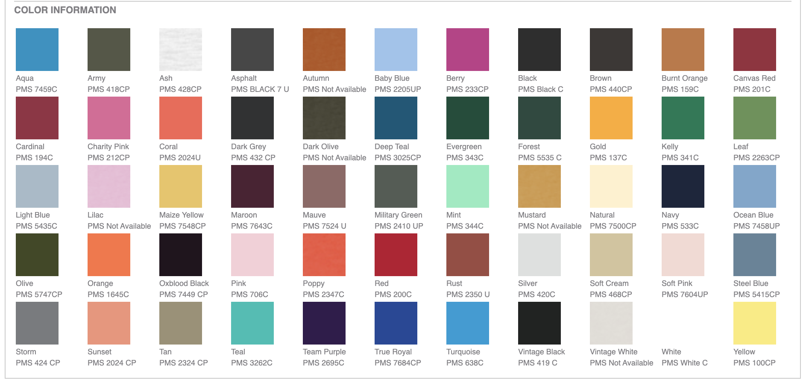
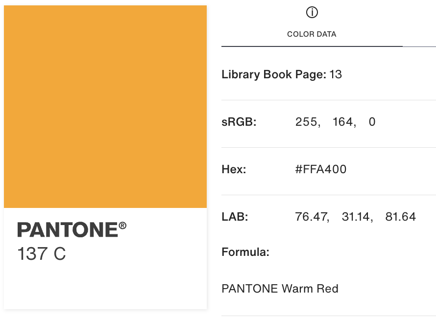

The Stonewall Dodgeball league in DC has a problem - we need to select more shirt colors for additional teams, but it looks like we've already used the entire rainbow!
Luckily there are many other colors to pick from, you can see some below:
But how do we figure out which color to pick?
We can gather detailed information about the shirt color using the Pantone Matching System (PMS) codes beneath each shirt.
The PMS provides a LAB color value, which is most useful to us.
Think of LAB color as a way to describe colors that matches how our human eyes actually see them. LAB breaks color down into three parts that make more intuitive sense:
Using LAB values, we can plot colors in 3D space! You can see the colors currently selected below.
Since LAB is a perceptually uniform space, the 3D distance between colors represents how similar two colors are.
For fun, we can also plot every color (you may want to zoom in):
Now that we have our colors in 3D space, we can begin our search for new colors.
Our goal is to find ~10 colors that are the furthest from the current set of colors.
While computing the distance in 3D space is an obvious solution. Special formulas have been developed for accurately depicting the distance between two colors. These are:
I have used both of these formulas to determine which colors are the furthest from those already chosen for the league.
New colors are marked with an asterisk *
New colors are marked with an asterisk *
All of this to say, we could use some more light blue or orange this season :)